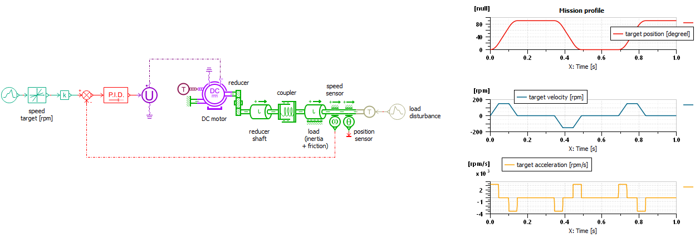
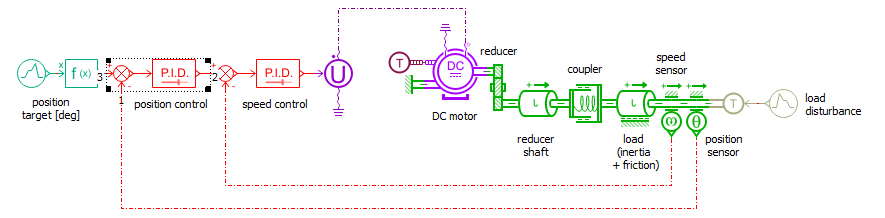
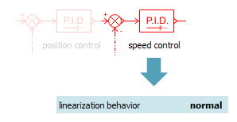
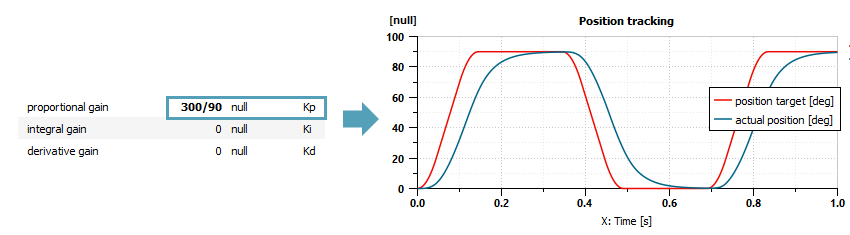
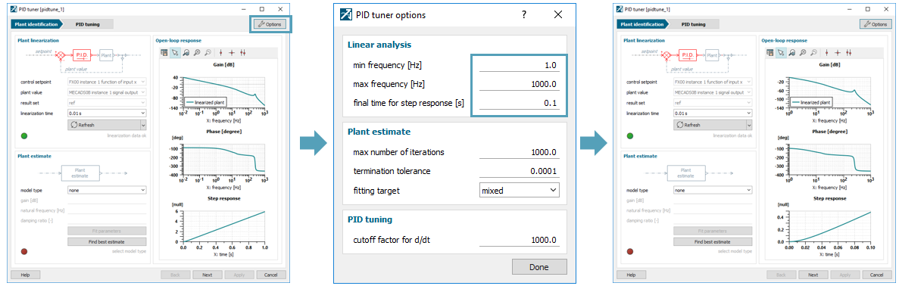
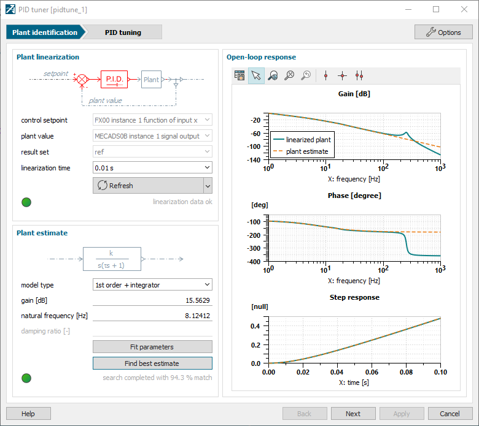
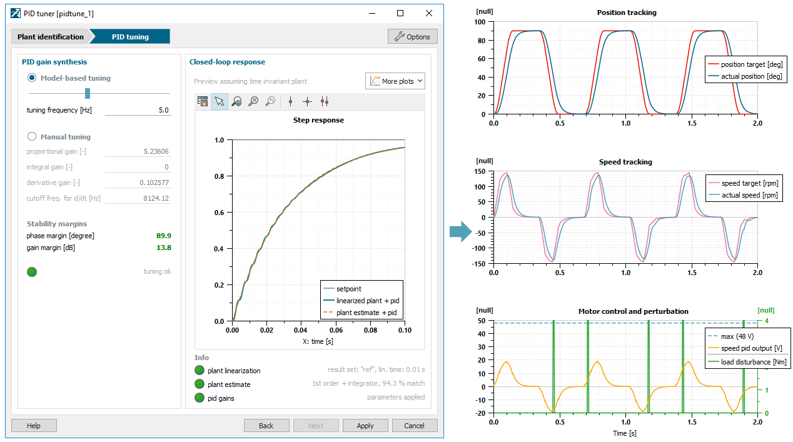
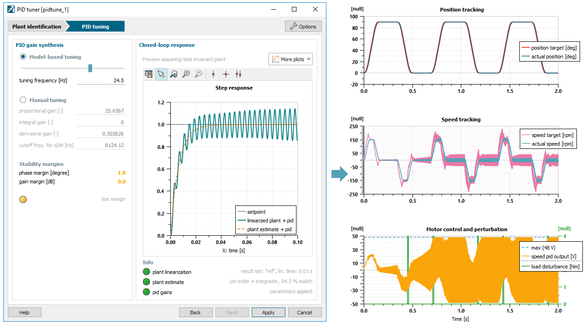
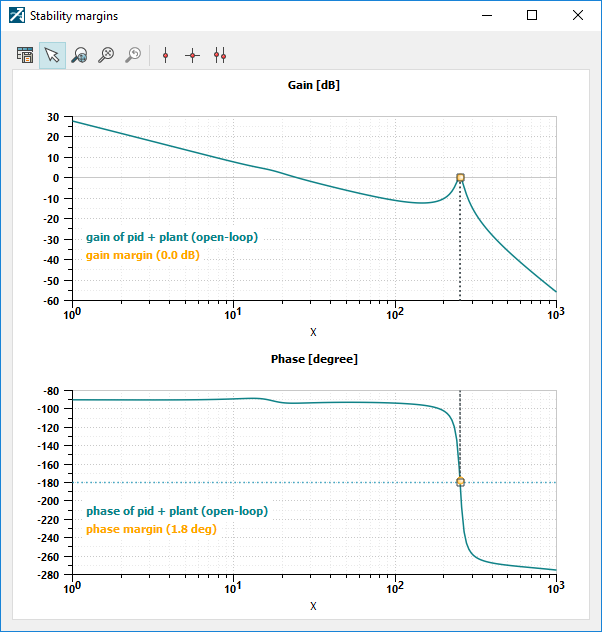

This demo illustrates how to make a position control loop by cascading 2 PID loops and calibrating them with the PID tuner. It's a continuation of the speed control loop demo.
$AME/demo/Libraries/SIG/PIDtunerPositionControl.ame
Let's consider a 48 V, 400 W drive system as depicted in Figure 1. The system is made of a brushless DC motor which moves a reciprocating load through a reduction gear. The load is connected to the reducer shaft with a coupling device represented by its stiffness and damping. The load consists of an inertia and a resistive torque proportional to speed (e.g. viscous friction). External torque disturbance may also affect the load.
The objective is now to control the position of the load so that it follows a mission profile made of constant acceleration, constant speed and constant position sequences. The speed control loop which was previously designed with the PID tuner is kept and an outer position loop will be defined here, using an additional position sensor.

Figure 1: Plant model with speed control loop and mission profile
Let's close the position loop using the PID controller SIGPIDT0. According to the PID tuner guidelines,

Figure 2: Closed-loop model
Next, the linearization behavior status of the inner loop PID must be switched to normal so that the outer loop PID sees correctly the inner loop during linearization.

Figure 3: Switch inner loop PID linearization behavior to normal
The system can be simulated to check that the load is moving in a stable fashion. One can observe that position tracking is already decent with the proportional control, even though a bit slow.

Figure 4: Initial results with pre-scaling of Kp
Let's open the PID tuner by clicking on its icon, either from the Variables or from the Parameters view. The tool loads linear analysis data and displays the Bode diagram and the step response as depicted on the left hand side of Figure 5. Let's first adjust ranges to focus on the interesting part of those curves (e.g. dominant modes centered in the frequency range, full transient for step response). For this, go into the Options menu and change the frequency range to 1-1000 Hz and the time scale to 0.1 s.

Figure 5: PID tuning tool, adjusting frequency and time scales
The plant is now correctly loaded. The system behaves as an integrator at low frequencies. That's why the proportional gain is already providing a zero static error. By changing the linearization time from the corresponding combo box, it can be confirmed that this model is time invariant since the Bode curve doesn't change with linearization point. Therefore, we don't have to think about which one to select for gain synthesis and we can move to the next step.
A simplified model has to be fitted on top of this linearization with the Plant estimate widget. Although this can be done manually by selecting a model type in the list and tuning its parameters until a good match is found, let's try the auto-fitting feature by hitting the Find best estimate button. The tool quickly converges to an integrator with first order lag as shown in Figure 6. One can recognize the natural frequency of the speed loop that was previously tuned at 8.0 Hz. Model fit is completed, so we can move to the PID tuning by hitting the Next button.

Figure 6: Fitting a model
By selecting a slower or a faster response with the slider bar, the tool automatically computes the PID gains. Therefore, calibration is about choosing the desired dynamic, while taking care of stability margins to deal with potential perturbations or plant variations. The tuning setup can be applied to the submodel with the Apply button. After updating the simulation, results can be confirmed using the plot configuration control. In the example below, the position loop is tuned at 5 Hz to get reasonable gain and phase margins.

Figure 7: Closed-loop response with robust tuning
For sake of demonstration, let's push the tuning until stability limits are just passed. This happens nearby 24.5 Hz. Around this frequency, both phase and gain margins are roughly zero due to the high frequency resonance of the system. After applying gains and updating the simulation, one can confirm that the system starts running stable and fast with however noisy commands. Along with time and excitation from perturbations, the magnitude of oscillations at PID output is increasing. This unstable behavior gets worse and worse and is eventually making the system diverge. Let's note that this instability is caused by the high frequency mode of the system around 250 Hz which mostly comes from the DC motor dynamics. This can be visualized with the Stability plot available under the More plots menu.

Figure 8: Closed-loop unstable response

Figure 9: Stability margins
This example highlights the necessity of checking stability margins with the PID tuner when calibrating the dynamic response.
As a conclusion, we've seen in this demo how PID controllers can be cascaded to isolate dynamics and how they can be easily calibrated thanks to the PID tuner.